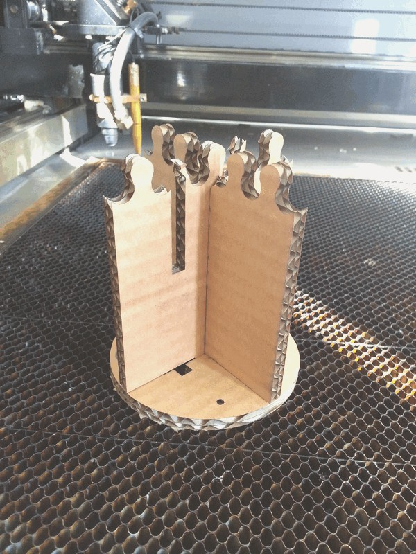

David Montenegro
FAB ACADEMY 2015
Assignments | Final Project | About | Contact
02_11 Computer-controlled Cutting
On wednesday 02.11.2015 we’ve got the third online lesson with Neil Gershenfeld.
The next lessons can be found on the Fab Academy account on Vimeo.
All the documentation can be found here
For this week the assignment was
** design, make, and document a press-fit construction kit **
Set up
In this week I’ve tried to use two different tools: vinilcutter and lasercutter.
Vinyls
Fiore, my local instructor, one time said me “you’re a LAZY BASTARD”, and so I decided to design and make some sticker to put on my laptop and on my chair.

Press kit
For the press kit I make some “spaceship” (well, it won’t look as you can imagine a spaceship), and helping a mate I made also another presskit.

What I’ve done
Vinyls
First I designed the vinyl in InkScape
I used Canter, a contemporary free font designed by Christopher J. Lee.

Than I saved it in png and usingFabModules I made the path to cut with a Roland Camm-1.

Here the steps to use FabModules:
-
Input format: select the format of the file you want to start from among PNG, SVG, STL, VOL. I’ve used the PNG with a 600dpi resolution.
-
Output format: select the machine you’re going to use and relative format file among SVG, Epilog, Trotec, Oxford, Roland GX-24, Roland MDX-20, ShopBot or G-code. I selected “cut vinyls”.
-
Process: select what you’re going to cut.
-
Now on the right side of the screen I’ve a column with some field and buttons; I just insert 1.1 in the ‘path error(pixel)’ and run the generation of the cutting path pressing ‘calculate’ and than ‘send’ to start cutting.
I made also some stripe to use as background.

Once cutted the vinyl I peeled the unused plastic having care to not remove some small part and than using the application tape I’ve applied to the support. To avoid to lose some smaller piece it would be better to modify the shape during the design process to join all toghether; another trick is to smooth slisghtly all the vertxes, so the cut wont have discontinuity and as the cutting as well as the peeling will be far more easy and quik.

DOWNLOAD
Lazy Bastard
Someone has to mute
Lasercut
I’ve used lasercut in the past, but every lasercutter is different from each other, so I started testing the tool.
I started making some pressfit joint with some slight width difference to measure how much matter has been lost by the burning.
I made a single 50mm peg and some slot with decremental width (&Delta: 0.1). This test was cutted on different materials (doublewave cardboard and plywood 3mm) and with different settings (see at the image below).
*cardboard*
speed 100 speed 100 speed 100 speed 20
power 100 power 20 power 100 power 1
passes 1 passes 1 passes 1 passes 1
*plywood*
speed 100 speed 100 speed 100 speed 100
power 80 power 60 power 40 power 20
passes 1 passes 1 passes 1 passes 2
<
It seems that the laser burn 0.25mm on cardboard and 0.20mm on plywood.
A 50mm (drawn, not measured) plywood peg fits well tight in a 49.6mm (drawn, not measured) slot.
These are useful informations for (all) the next step to produce a “strange spaceship”.
Sketch
I know that the piece “spaceship” has to be very light, simple and not didascalic in its shape. The idea was quite clear: a simple cube.
So I’ve made some sketch to figure out how the joints may work togheter and then I started working on Grasshopper to build a tool that allow to set dimensions, material and tolerance and spits out the whole set to make a “cubic spaceship”.
Grasshopper
The Grasshopper definition has some minor parts, like ‘base rectangle’ or ‘base slot’ and 4 main branches, one per piece, plus one more to parametricaly define a puzzle joint.
- On the left side you can find all the parameters that defines the joints; grouped this way they allow to manage all the definition from just one site.
-
At the center the definitions of the different pieces (piece 2 and 3 are the same).
-
On the right the filter to show just one piece or the whole kit nested and ready to be cutted.
-
The independent group at the top defines the puzzle joint.
DOWNLOAD
gh_def_HR
spaceships_parametric_pressfit
{kind=link}
{kind=link}
Cutting
I’ve cutted the model using a double wave 7mm cardboard on a FullSpectrum 90W so with the grasshopper definition I produced the following files

At the end what I’ve achieved is what you can see here below.

It’s a modular cube with a puzzle joint over the top to eventualy add other modules or upgrades.
It will be made also in plexiglass and plywood, testing som pattern engrave.
{kind=link}
Extra
In this week I made this other “thing”